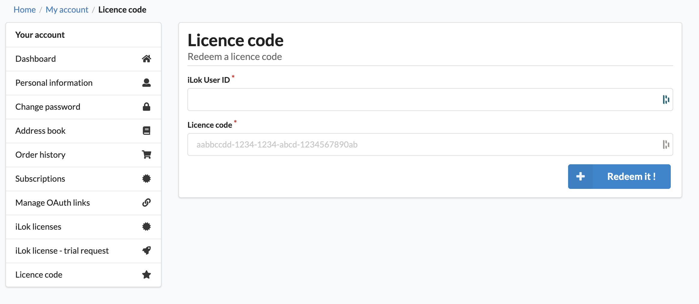
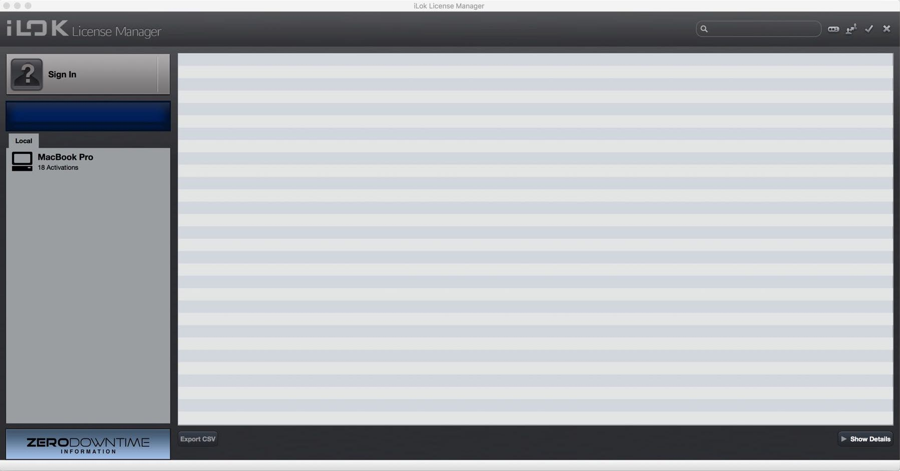
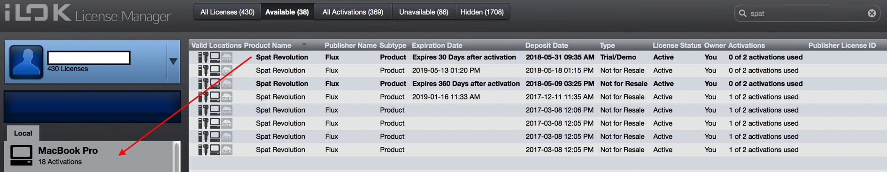

Installation
If you are new to the FLUX:: Immersive ecosystem, the first installation of FLUX:: software is a four steps process :
- Create an account at flux.audio
- License code redeem
- Software license activation
- Download and installation
Create and account
Redeem a License Code from activation code
Unless you purchased your license in the flux.audio online store, you will need to redeem your license.
FLUX:: uses the iLok license management system to deliver software licenses to users. If you have received an activation code (such as from a dealer purchase),you can use the Redeem License Code window to activate your license.

Visit our License Code Activation page.
Two different licenses are available for this product: Elixir Session and Elixir Essential. Check the technical details page for more informations.
iLok User Account
To activate licenses:
- An iLok user account is required.
- An iLok USB key is optional.
FLUX:: uses the iLok license management system to deliver software licenses to users. If you don’t have an iLok account yet, please create a free iLok account at http://www.ilok.com and download the iLok license manager. All FLUX:: plug-ins come with two activations. Having two activations gives you the possibility of a fixed license on one particular machine and a portable license on an iLok USB key if you own one.
Cloud license currently not supported
iLok License Manager
If you have redeemed your software license or completed your purchase process, your license will automatically be delivered into your iLok account

For new iLok users, the first step is to download and install the iLok license manager available on the home page of the iLok website. When your user account is successfully activated and the iLok license manager is correctly installed, you can start the license manager software and log in to your iLok user account.
Transferring license

Pressing on the sign in button will allow you to connect to your account. After Logging in, you are now ready to transfer any licenses to a computer or to any iLok USB key if you happen to have one. The process of transferring a license is as simple as dragging the license from the Available tab to your Local Computer (or iLok key) on the left side.
Simply drag your license to your Local Computer or on an iLok USB key. You are now set!
If you require further information about iLok and managing licenses please refer to iLok.com website
FLUX:: Center
Next step is to get the installers for the FLUX:: products you are licensed for. All the software and plugins from FLUX:: are available via our FLUX:: Center software. This is a Mac or Windows application we have created to help keep your FLUX:: products up to date and to give you a clear overview of what you have installed. Firstly, please visit the download section of the FLUX:: Website to get the installer for the FLUX:: Center application.
On this page you will find a macOS, a Windows 64 bits, as well as legacy versions for older operating systems. After downloading and installing, you can open the FLUX:: Center applications to begin the process of installing the Elixir.
!> An authentification is required at the launch of FLUX:: Center. This is the login details of your FLUX shop account which allows you to see only your products licensed for (temporary or permanent)
To be noted: The binary is the same for either Session and Essential version.
Center Preferences
When you open FLUX:: Center you will see a page that lists all FLUX:: products available for you to install. You will also find information about which version you have currently installed on your system and which new versions might be available for you to update to. You can select versions to install - or uninstall if necessary - using the pull down menus. If you would like to access more installer options such as your preferred plug-in format, please click on the gear icon to the top right of the header area.
Center Preferences and Options
This preference page will allow you to choose various installation options such as preferred plug-in formats for your system. Choosing your format and returning to the main page by pressing the OK button will show all your install options for software and plugins based on the desired formats chosen.
If you would like to be closer to the most current development cycles of the software, you can enable the Beta Versions option. This will give you access to a special set of software installers from the pull down menus on the main FLUX:: Center page. Beta versions are the new builds that are still under development but may contain useful bug fixes and new features. If you find that a beta version is not stable enough for you, then you can always roll back to a stable release version at any time through the FLUX:: Center installers. Note that these versions starts with a “B” where official releases start with a “V”